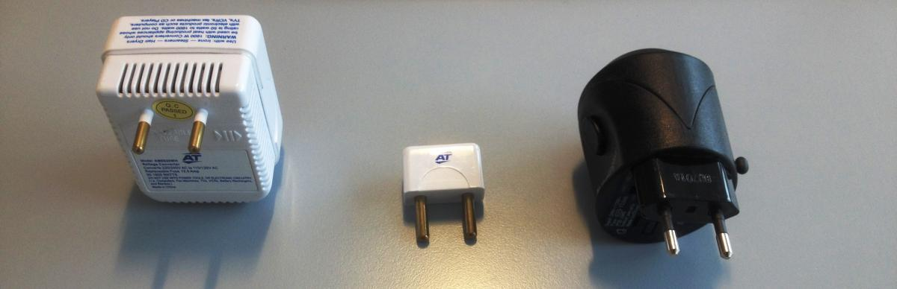
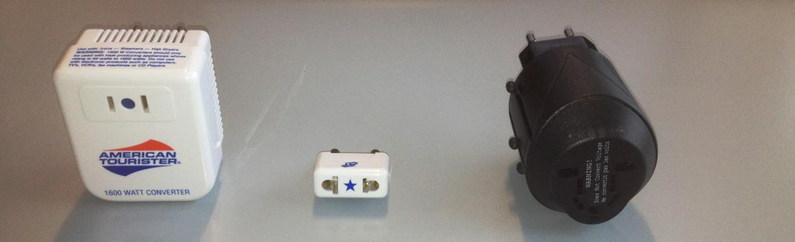

FAQ
FAQ:
Nuuk in March:
When you arrive to Nuuk in March the temperature is around -5 to -12 degrees and the sun will shine around 20 days, so remember your sunglasses because the sun is sharp.
How to get to Greenland
Air Iceland have three weekly flights from Keflavik, Iceland directly to Nuuk. Tickets can be bought at www.airiceland.com or through your travel agency.
Air Greenland have flights from Copenhagen on most weekdays. Further there will be set up a number of direct flights between Nuuk and Iqaluit. First possible flight from Iqaluit to Nuuk is on the 6th, while the last possible flight from Nuuk directly to Iqaluit is on the 10th. Tickets can be bought at www.airgreenland.com or through your travel agency.
For further information on how to get to Nuuk see this link: How to get to Greenland.
When traveling to Nuuk, Greenland, you need to be aware of customs and duty regulations. For information about these click here.
Accommodation in Nuuk
Due to limited accommodation venues, finding accommodation in Nuuk can be difficult. During AWG2016 a lot of these venues have already been booked including: Hotel Hans Egede, Hotel Nordbo, The Seamen’s Home, Inuk Hostels, Vandrehuset, accommodation LP Invest.
You can find information on accommodation here.
For further information on accommodation possibilities please contact tupilaktravel.gl, the staff will be able to tell you which possibilities are available or try https://www.airbnb.com/.
Restaurants and cafes
There are several restaurants and cafes in Nuuk where you can dine, for information about restaurants and cafes, look at page 99-101 in Colourfull Nuuk. if you want to see more of the greenlandic Cuisine click here.
Tipping: The cost of service and VAT is included in all prices at restaurant, hotels, etc. Tipping is therefore not customary in Greenland, but tips are still appreciated when offered.
Main grocery Shopping
There are two main grocery stores in Nuuk, Pisiffik (who is also the retailer of games merchandise) and Brugseni. There are several other convenience stores and some are open until midnight.
Merchandise
The AWG2016 merchandise is available online. For further information, see the AWG2016 shop.
Cash, credit cards and ATM’s:
In Greenland the currency is Danish crowns (DKK). It is normal to pay with cash, but international cards can be used at most hotels, shops and convenience stores in Nuuk. The ATM’s are able to receive cards without chip.
OBS:
- Every time you need to pay in stores or withdraw in ATM’s, you need a four-digit code to use the credit card.
- If you withdraw cash in Greenland remember to check with your bank about fees and Card rules.
- It will be possible to withdraw around 2000 Dkr pr. Day.
Cash can be withdrawn in the following banks and their corresponding ATM’s:
- Grønlandsbanken
o Adress: Imaneq 33 – 3900 Nuuk
During AWG2016 opening hours will be:
5. and 6. march (Saturday and Sunday) : 10-14
7-10. march (monday-thursday): 9.30-15.30
11. march (friday): 9.30-15.00
It will be possible to exchange following currents to DKK: Sweden (SEK), Norway (NOK), Finland(EUR), Canada (CAD) and USA (USD).
Be aware that if you want to exchange more than 1000 euro or around 1000 USD (7500 DKK), you need to show credentials.
The following cards can be used in Grønlandsbanken ATM’s:
VISA-cards incl. VISA Electron, Prepaid visa and V-Pay, Eurocheque-cards (Not Danish), Eurocard, Mastercard, Mastercard debet, Maestro, Cirrus-card, JCB, UnionPay, American Express.
Their atm’s can be found here
- BankNordik
The following cards can be used in Banknordik ATM’s:
VISA-cards incl. VISA Electron, Prepaid visa and V-Pay, MasterCard, JCB, Maestro Card, Union Pay and Eurocard.
Placement of ATM’s: One is at the BankNordik/telepost Entrance and one in Nuuk Center.
Transportation:
In Greenland you drive in the right side off the road and if you walk there are sidewalks/paths for pedestrian.
Car rent: It is not possible to rent a car during the AWG2016.
Taxa (Cab): In Greenland transportation in a cab is a normal way to come around, but also more expensive than a cab in Canada for example. There is to companies and can be contacted by telephone:
- Nuuk Taxi – (+299) 363636
- TAXAGUT -- (+299) 321321
Telephone:
country code: To dial a Greenlandic number you will need +299.
Water:
The water in Greenland is pure, so it can be tapped directly.
Language:
In Greenland the official language is Greenlandic. The second language spoken in Greenland is Danish and the third is English. Therefore when you come to Greenland and Nuuk you might experience that people can’t speak English. As a public service AWG2016 is offering courses in English. For more information about the Greenlandic language click here.
Electricity:
The Electricity in Greenland is 220 volt/50 hertz. In greenland it is the European standards which is type C.
To be sure you can use your electric products check the information on your product and if needed buy an adapter and/or converter. The following pictures are examples off different plugs with or without converter/adapter that will fit the sockets in Greenland.

